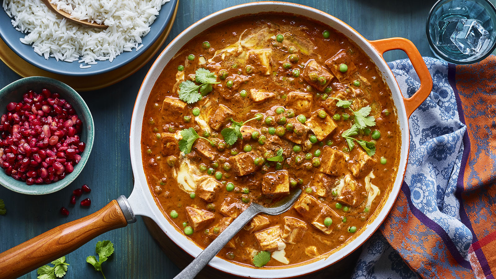

Royal Butter Paneer
Image Credits: BBC Food by Nisha Katona
- Preparation time: less than 30 mins
- Cooking time : 10 to 30 mins
- Serves : 4
- Dietary : Ⓥ
To serve: Handful coriander and cooked rice
This is creamy curry heaven - gentle spices mix with crème fraîche to make a rich sauce that covers paneer and sweet peas. A little pomegranate and coriander perks it up. This dish is great served with Nisha's ginger beer onion bhajis and coriander and mint chutney.
100ml/3½fl oz vegetable oil
1 tsp cumin seeds
1 onion, finely chopped
5 garlic cloves, finely chopped
5cm/2in piece fresh grated ginger
2 tsp dried fenugreek leaves
2 tbsp garam masala
1 tsp ground turmeric
¼ tsp chilli powder (optional)
150g/5½oz tomato purée
1 tsp salt
1½ tbsp sugar
100ml/3½fl oz crème fraîche
250g/9oz frozen peas
500g/1lb 2oz chopped paneer
large knob of unsalted butter
1 tsp cumin seeds
1 onion, finely chopped
5 garlic cloves, finely chopped
5cm/2in piece fresh grated ginger
2 tsp dried fenugreek leaves
2 tbsp garam masala
1 tsp ground turmeric
¼ tsp chilli powder (optional)
150g/5½oz tomato purée
1 tsp salt
1½ tbsp sugar
100ml/3½fl oz crème fraîche
250g/9oz frozen peas
500g/1lb 2oz chopped paneer
large knob of unsalted butter
1. Heat a pan to a high heat, then add a dash of the oil. When the oil is hot, add the cumin seeds, frying until they're almost black. Turn the heat down to medium-low, then add the rest of the oil, followed by the onion, garlic and ginger. Cook until the onions have turned golden-brown and sweet.
2. Add the fenugreek, garam masala, turmeric and chilli powder (if using) and then the tomato purée. Allow to cook for a couple of minutes on a high heat, making sure that the tomato purée is beginning to cook through a little.
3. Pour in 500ml/18fl oz water. Add the salt and sugar, then bring to the boil and remove from the heat.
4. For a silky smooth sauce, you can blend it using a stick blender or food processor for about a minute. Stir in the crème fraîche.
5. Return the pan to the heat, add the peas and paneer, and simmer on medium for around 10 minutes, or until the cheese has softened.
6. Turn off the heat and gently stir in the butter.
7. Garnish with freshly chopped coriander and pomegranate seeds. Serve with rice and the ginger beer onion bhajis and coriander and mint chutney if you like.
2. Add the fenugreek, garam masala, turmeric and chilli powder (if using) and then the tomato purée. Allow to cook for a couple of minutes on a high heat, making sure that the tomato purée is beginning to cook through a little.
3. Pour in 500ml/18fl oz water. Add the salt and sugar, then bring to the boil and remove from the heat.
4. For a silky smooth sauce, you can blend it using a stick blender or food processor for about a minute. Stir in the crème fraîche.
5. Return the pan to the heat, add the peas and paneer, and simmer on medium for around 10 minutes, or until the cheese has softened.
6. Turn off the heat and gently stir in the butter.
7. Garnish with freshly chopped coriander and pomegranate seeds. Serve with rice and the ginger beer onion bhajis and coriander and mint chutney if you like.